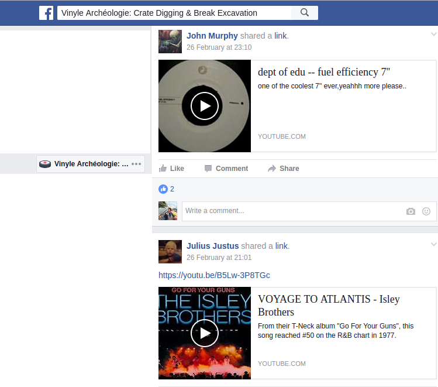
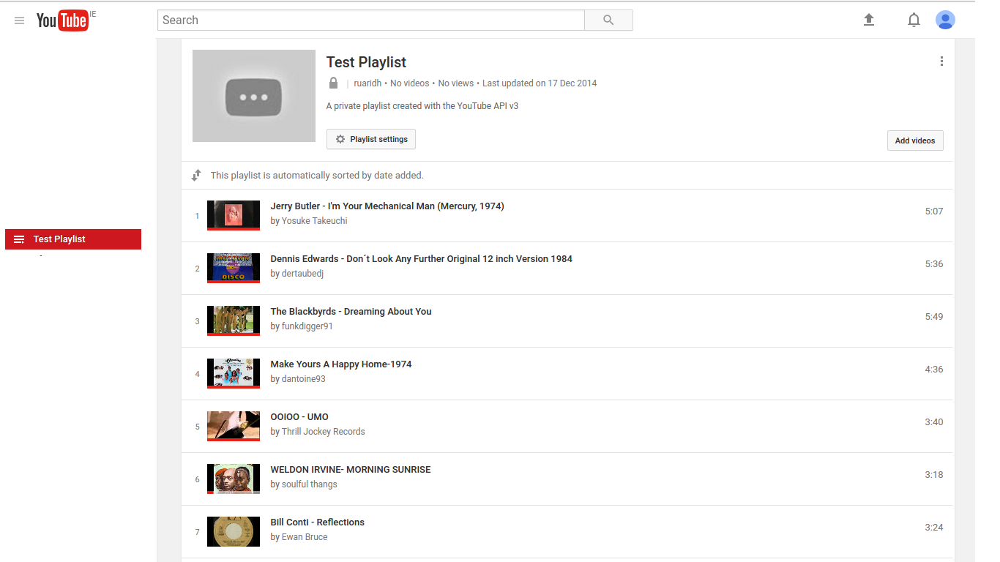

Facebook Group to Youtube playlist
Having previously completed this project in the past by copying and pasting code and debugging through google searches .I have decided to rewrite the project from the start with a few improvements
problem
I cannot go to a facebook group containing youtube song links, press play and have every song in the group autoplay
Example

To

Solution (and a few other features)
-
Using Facebook Graph API take youtube links from facebook group import into relational database with
- ID
- URL
- Artist
- Song
- like count
- number of comments
- times posted
- posted by
-
Using Youtube Data API create
- new playlist
- name playlist after Facebook group
- add all songs to newly created playlist
-
Download highest possible audio from youtube
-
Check Artist and Song against external database
what.cd
and automate download of FLAC
- Create UI for browsing database with ability to sort.
- Add statistics and make data beautiful!